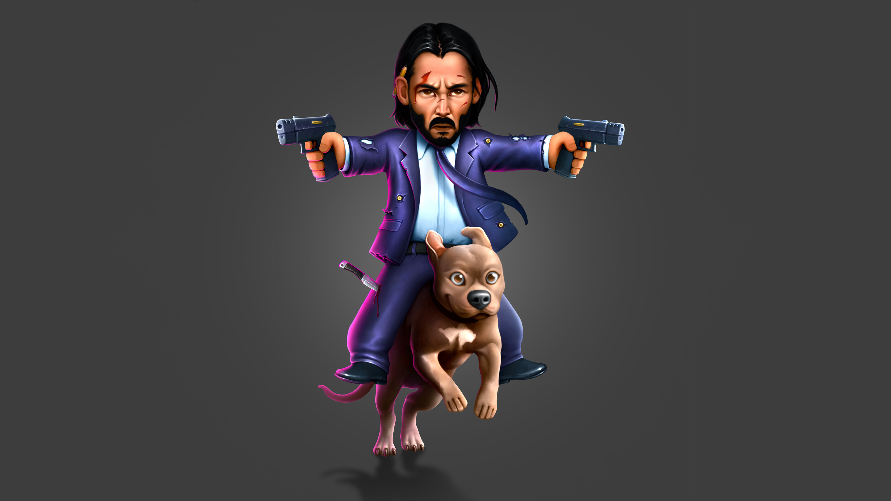

About John Wick
John Wick (Keanu Reeves) was born Jardani Jovonovich in Belarus. He was an orphan, and was taken in by the Tarasov Russian Mafia where he was raised as an assassin. He was so ruthless that the mafia boss Viggo Tarasov respected and feared him.
John Wick and His Dog
Characteristics
- He Says Very Little
- His Hand-To-Hand Fighting Style
- He Likes To Flip His Enemies
- He Wears The Best Suits